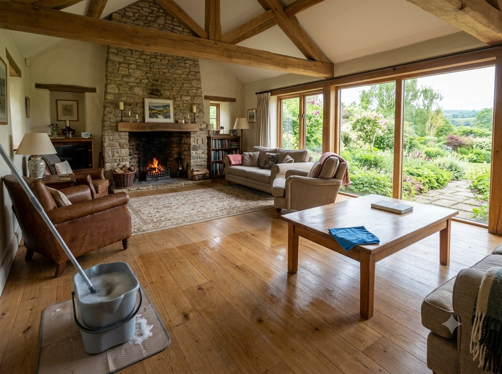

Звоните ежедневно 09:00–00:00+7 (925) 518-63-37
Заказать уборку

Удалим до 100% всех возможных загрязнений и неприятных запахов. Наша команда приезжает точно в срок, со всем необходимым: от инвентаря и стремянок до гипоаллергенных, безопасных средств, которые подходят даже для семей с детьми и домашних животных. Результат — чистота, которую видно сразу, и атмосфера уюта, в которую хочется возвращаться.
Каждый клинер проходит обучение и аттестацию. Знаем, как работать с разными типами поверхностей, мебели и материалов, чтобы добиться результата без риска повреждений.
Мы несём ответственность за сотрудников и результат. Если что-то не понравится — приедем и переделаем. Ваше имущество под надёжной защитой.
Используем технику Karcher, Cleanfix, экологичные и безопасные моющие средства, которые справляются даже с трудными пятнами, жиром и налётом, не вредя здоровью семьи и животных.
Перед началом работ вы получаете чёткий расчёт стоимости, основанный на площади, объёме задач и типе уборки. Никаких доплат после завершения.
Выезд в день обращения, уборка вечером, по выходным или по графику. Оставьте заявку — бригада будет на месте в течение 2 часов.
Когда вы заказываете уборку у нас — вы получаете комплексную услугу, продуманную до мелочей. Основной перечень работ:
Перед началом уборки клинер уточняет нюансы и пожелания: что требует особого внимания, какие поверхности нуждаются в деликатной очистке, где важно не использовать химию.
Дополнительно можно заказать: стирку и глажку белья; чистку ковров, матрасов, штор; уборку труднодоступных мест (высокие полки, за мебелью, радиаторы); уборку после животных; полировку мебели, дезинфекцию и антибактериальную обработку.
| Вид уборки | Время выполнения | Стоимость от |
|---|---|---|
| Генеральная уборка | 5–6 часов | от 8 500 ₽ |
| Поддерживающая уборка | 3–4 часа | от 5 000 ₽ |
| После ремонта или строительства | 6–8 часов | от 11 000 ₽ |
| Разовая уборка | 2–5 часов | от 6 000 ₽ |
| Уборка перед сдачей/переездом | 4–6 часов | от 7 500 ₽ |
Минимальный выезд — от 5 000 ₽.